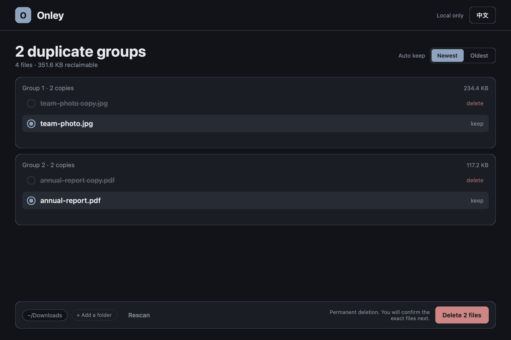

Local by default
The index lives at ~/.onley/local.db. Your privacy is built in: no telemetry, no cloud, and no account required.
Local-only duplicate cleaner
Onley scans your local storage with byte-level precision. It finds duplicate groups, compares file hashes, and reclaims wasted space. The desktop app deletes only after you confirm, and normal scans stay on your machine.

Why Onley?
The index lives at ~/.onley/local.db. Your privacy is built in: no telemetry, no cloud, and no account required.
Cancel at any time. Finished files stay indexed, and the next scan skips unchanged files. A bounded worker pool keeps CPU use predictable.
Keep the newest or oldest copy in every group by modification time. Equal times fall back to path order.
Scan, review, and clean from the terminal. The workflow is scriptable and fast.
Onley compares file contents by hash, not just names, so renamed copies still match.
Written in Go, with a bounded worker pool and a local SQLite index.
$ onley scan ~/DownloadsScanning: /Users/you/DownloadsDone: 4,821 file(s) indexed (0 unchanged skipped), 126 with duplicates.$ onley statsTotal indexed: 4,821Duplicates: 126$ onley clean...Done: 84 deleted, 0 failed.